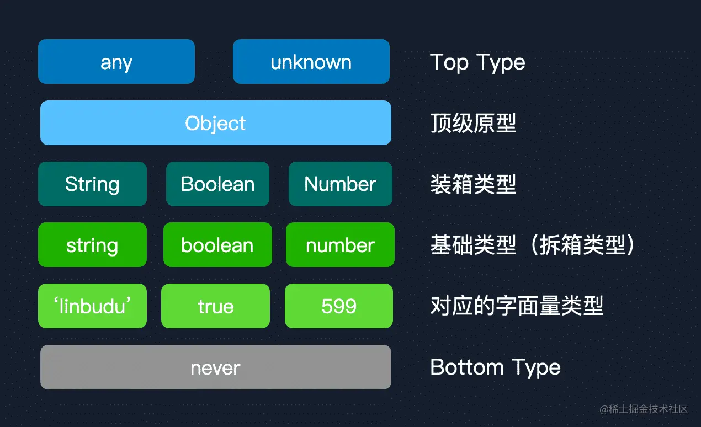

TypeScript
主讲人：周啟尧
2023/xx/xx
本期目录
- TypeScript 的必要性
- TypeScript 解决了什么问题
- TypeScript 类型系统浅谈
- TS 配置与环境搭建
TypeScript 的必要性
- 百度指数
- 谷歌趋势
TypeScript 解决了什么问题
提供了类型系统，弥补了 JavaScript 在静态类型检查方面的缺陷，能够提前在编译的时候规避许多 bug.
此外..
- 类型检查，通过在编译器进行严格的类型检查，可以在编码阶段就可发现可能存在的bug，而不必把它们带到生产环境上。
- 规范的类型编程可以让开发者在写代码的过程中获得良好的代码提示。
- 提供语言拓展，包含了许多特性，比如ES7的装饰器，比如接口和抽象类。
- 可以帮助团队重塑类型思维，便于代码维护和迭代。
TypeScript 难点
-
类型兼容
-
配置(TSConfig, 构建工具链, 开发环境配置等)
let d:string[] = []
let f:number[] = []
声明的 string/number 类型的数组, 为什么可以赋值为空数组?
TypeScript 类型系统
结构化类型系统 / 鸭子类型
鸭子类型的名字来自于鸭子测试，它的核心理念是:如果你看到一只鸟走起来像鸭子，游泳像鸭子，叫得也像鸭子，那么这只鸟就是鸭子。
结构化类型系统在 C#、Python、Object-C 中被广泛使用和支持。
鸭子类型系统和结构化类型系统并不完全一致，结构化类型系统意味着 基于完全的类型结构 来判断类型兼容性，而鸭子类型则只基于 运行时访问的部分 来决定。
TypeScript 本身并不是在运行时进行类型检查，官方文档中认为这两个概念是一致的（One of TypeScript’s core principles is that type checking focuses on the shape that values have. This is sometimes called “duck typing” or “structural typing”.）。所以这里我们也可以直接认为鸭子类型与结构化类型是同一概念。
除了 基于类型结构进行兼容性判断的结构化类型系统 以外，还有一种 基于类型名进行兼容性判断的类型系统 ，标称类型系统。
C++、Java、Rust 等语言主要使用标称类型系统。
class Cat {
eat() { }
}
class Dog {
eat() { }
}
function feedCat(cat: Cat) { }
feedCat(new Dog())
上面的例子在 TypeScript 中不会报错，因为 TypeScript 中比较两个类型并非通过两个类型的名称，而是通过两个类型上实际拥有的属性与方法。
如果在 Cat 的属性上添加一个新的方法....
class Cat {
eat() { }
jump() { }
}
class Dog {
eat() { }
}
function feedCat(cat: Cat) { }
// Error!
feedCat(new Dog())
这时候，`Cat` 类型的属性在 `Dog` 类型上并不完全存在，`Cat` 有其独特的 `jump` 方法，因此 `TypeScript` 认为 `Cat` 和 `Dog` 不能再被视为同一类型
而如果在 Dog 类型上添加新的方法
class Cat {
eat() { }
}
class Dog {
eat() { }
bite() { }
}
function feedCat(cat: Cat) { }
feedCat(new Dog())
TypeScript 一样可以通过类型检测, 原因是 `Dog` 类型完全实现了 `Cat` 类型的方法，而额外的方法可以认为是 `Dog` 类型继承 `Cat` 类型后的独有方法。
TypeScript 在比较对象类型的时候会采用结构化类型系统进行判断，对于结构中的函数类型，也会进行兼容性比较：
class Cat {
eat():boolean {
return true
}
}
class Dog {
eat():number {
return 100
}
}
function feedCat(cat: Cat) { }
// Error!
feedCat(new Dog())
标称类型系统
要求两个可兼容的类型，其名称必须完全一致。
type USD = number;
type CNY = number;
const CNYCount: CNY = 200;
const USDCount: USD = 200;
function addCNY(source: CNY, input: CNY) {
return source + input;
}
addCNY(CNYCount, USDCount)
在 TypeScript(结构化类型系统)中，USD 和 CNY 被认为是完全一样的类型。从变量定义来看，两者属于不同的货币，其代表的实际价值不一样，不应该进行 add 操作。
标称类型系统中，USD 和 CNY 被认为是不同的类型，从而避免了这一情况的发生。
对与结构化类型系统，可以通过类型的结构体现两个类型之间具有父子类型关系，而在标称类型系统中，只能通过显式的继承实现。
class Cat(){}
class ShortHairCat extends Cat(){}
类型层级
顶级类型
底层类型
// 得到基本类型
const b = '1'
const c = String('1')
装箱类型和拆箱类型
String,Number,Boolean
// 得到基本类型
const b = '1'
const c = String('1')
// 得到一个实例对象
const a = new String('1')
console.log(typeof a) // object
// a instanceof String ...
Object,object 与 {}
类型兼容
协变 逆变
Hidden Slides
This slide is visible in the source, but hidden when the presentation is viewed. You can show all hidden slides by setting the `showHiddenSlides` config option to `true`.
Pretty Code
import React, { useState } from 'react';
function Example() {
const [count, setCount] = useState(0);
return (
...
);
}
Code syntax highlighting courtesy of highlight.js.
With animations
Point of View
Press ESC to enter the slide overview.
Hold down the alt key (ctrl in Linux) and click on any element to zoom towards it using zoom.js. Click again to zoom back out.
(NOTE: Use ctrl + click in Linux.)
Auto-Animate
Automatically animate matching elements across slides with Auto-Animate.
Auto-Animate
Auto-Animate
Touch Optimized
Presentations look great on touch devices, like mobile phones and tablets. Simply swipe through your slides.
Add the r-fit-text class to auto-size text
FIT TEXT
Fragments
Hit the next arrow...
... to step through ...
... a fragmented slide.
Fragment Styles
There's different types of fragments, like:
grow
shrink
fade-out
fade-right, up, down, left
fade-in-then-out
fade-in-then-semi-out
Highlight red blue green
Transition Styles
You can select from different transitions, like:
None -
Fade -
Slide -
Convex -
Concave -
Zoom
Themes
reveal.js comes with a few themes built in:
Black
(default) -
White
-
League
-
Sky
-
Beige
-
Simple
Serif
-
Blood
-
Night
-
Moon
-
Solarized
Slide Backgrounds
Set data-background="#dddddd" on a slide to change the background color. All CSS color formats
are supported.
Gradient Backgrounds
<section data-background-gradient=
"linear-gradient(to bottom, #ddd, #191919)">Image Backgrounds
<section data-background="image.png">Tiled Backgrounds
<section data-background="image.png" data-background-repeat="repeat" data-background-size="100px">Video Backgrounds
<section data-background-video="video.mp4,video.webm">... and GIFs!
Background Transitions
Different background transitions are available via the backgroundTransition option. This one's called "zoom".
Reveal.configure({ backgroundTransition: 'zoom' })Background Transitions
You can override background transitions per-slide.
<section data-background-transition="zoom">Iframe Backgrounds
Since reveal.js runs on the web, you can easily embed other web content. Try interacting with the page in the background.
Marvelous List
- No order here
- Or here
- Or here
- Or here
Fantastic Ordered List
- One is smaller than...
- Two is smaller than...
- Three!
Tabular Tables
| Item | Value | Quantity |
|---|---|---|
| Apples | $1 | 7 |
| Lemonade | $2 | 18 |
| Bread | $3 | 2 |
Clever Quotes
These guys come in two forms, inline: The nice
thing about standards is that there are so many to choose from
and block:
“For years there has been a theory that millions of monkeys typing at random on millions of typewriters would reproduce the entire works of Shakespeare. The Internet has proven this theory to be untrue.”
Intergalactic Interconnections
You can link between slides internally, like this.
Speaker View
There's a speaker view. It includes a timer, preview of the upcoming slide as well as your speaker notes.
Press the S key to try it out.
Export to PDF
Presentations can be exported to PDF, here's an example:
Global State
Set data-state="something" on a slide and "something"
will be added as a class to the document element when the slide is open. This lets you
apply broader style changes, like switching the page background.
State Events
Additionally custom events can be triggered on a per slide basis by binding to the data-state name.
Reveal.on( 'customevent', function() {
console.log( '"customevent" has fired' );
} );
Take a Moment
Press B or . on your keyboard to pause the presentation. This is helpful when you're on stage and want to take distracting slides off the screen.
Much more
- Right-to-left support
- Extensive JavaScript API
- Auto-progression
- Parallax backgrounds
- Custom keyboard bindings